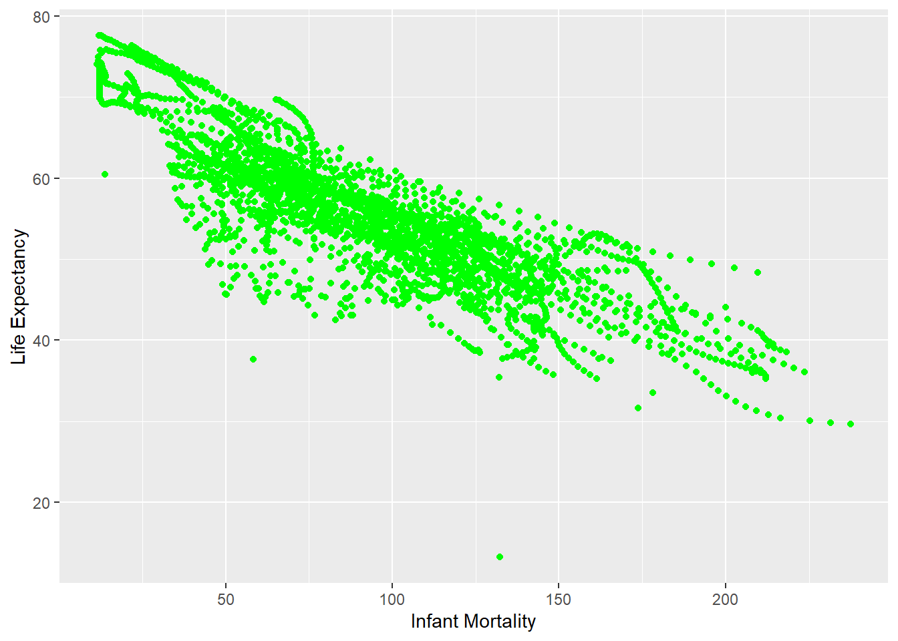
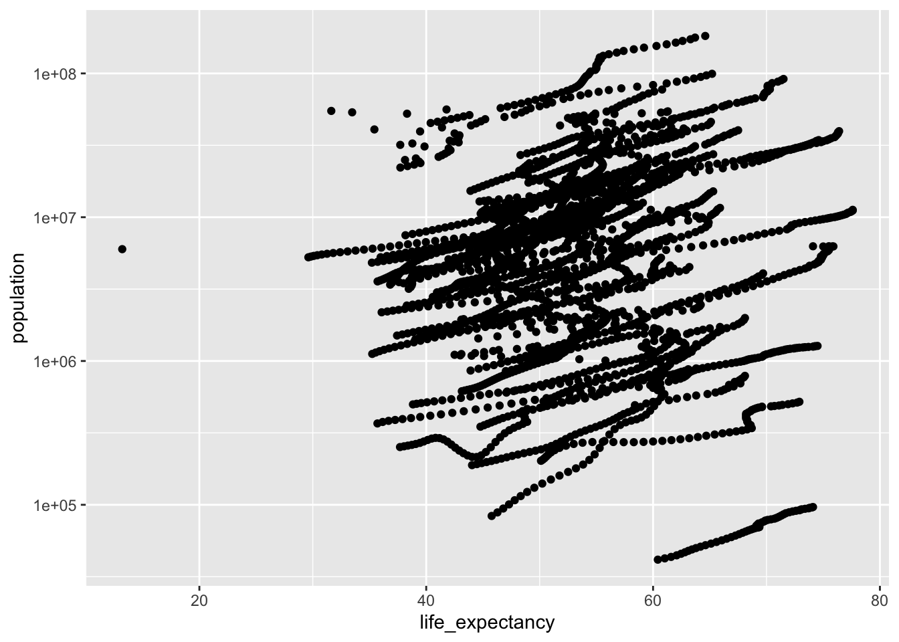
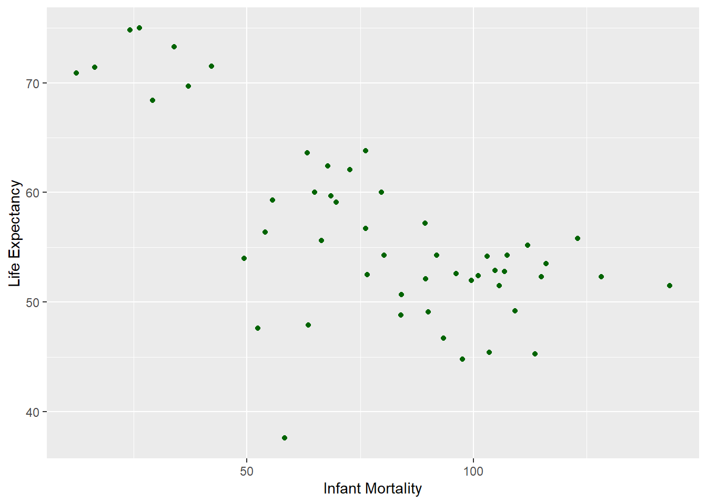
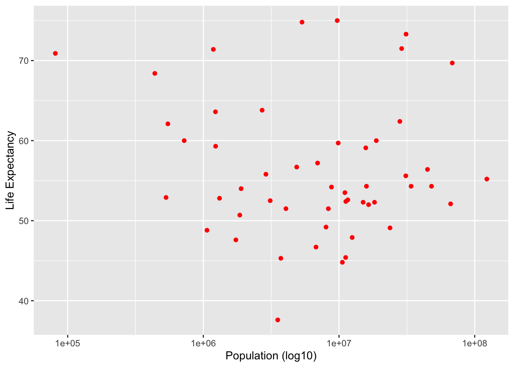

#Install dslabs package
#Load dslabs library
#install.packages("dslabs")
library("dslabs")Warning: package 'dslabs' was built under R version 4.5.2#See overview of the gapminder data from dslabs
str(gapminder)'data.frame': 10545 obs. of 9 variables:
$ country : Factor w/ 185 levels "Albania","Algeria",..: 1 2 3 4 5 6 7 8 9 10 ...
$ year : int 1960 1960 1960 1960 1960 1960 1960 1960 1960 1960 ...
$ infant_mortality: num 115.4 148.2 208 NA 59.9 ...
$ life_expectancy : num 62.9 47.5 36 63 65.4 ...
$ fertility : num 6.19 7.65 7.32 4.43 3.11 4.55 4.82 3.45 2.7 5.57 ...
$ population : num 1636054 11124892 5270844 54681 20619075 ...
$ gdp : num NA 1.38e+10 NA NA 1.08e+11 ...
$ continent : Factor w/ 5 levels "Africa","Americas",..: 4 1 1 2 2 3 2 5 4 3 ...
$ region : Factor w/ 22 levels "Australia and New Zealand",..: 19 11 10 2 15 21 2 1 22 21 ...#Get summary of the gapminder data
summary(gapminder) country year infant_mortality life_expectancy
Albania : 57 Min. :1960 Min. : 1.50 Min. :13.20
Algeria : 57 1st Qu.:1974 1st Qu.: 16.00 1st Qu.:57.50
Angola : 57 Median :1988 Median : 41.50 Median :67.54
Antigua and Barbuda: 57 Mean :1988 Mean : 55.31 Mean :64.81
Argentina : 57 3rd Qu.:2002 3rd Qu.: 85.10 3rd Qu.:73.00
Armenia : 57 Max. :2016 Max. :276.90 Max. :83.90
(Other) :10203 NA's :1453
fertility population gdp continent
Min. :0.840 Min. :3.124e+04 Min. :4.040e+07 Africa :2907
1st Qu.:2.200 1st Qu.:1.333e+06 1st Qu.:1.846e+09 Americas:2052
Median :3.750 Median :5.009e+06 Median :7.794e+09 Asia :2679
Mean :4.084 Mean :2.701e+07 Mean :1.480e+11 Europe :2223
3rd Qu.:6.000 3rd Qu.:1.523e+07 3rd Qu.:5.540e+10 Oceania : 684
Max. :9.220 Max. :1.376e+09 Max. :1.174e+13
NA's :187 NA's :185 NA's :2972
region
Western Asia :1026
Eastern Africa : 912
Western Africa : 912
Caribbean : 741
South America : 684
Southern Europe: 684
(Other) :5586 #Determine data type of gapminder
class(gapminder)[1] "data.frame"#Assign African countries to africadata, then see overview and summary of subsetted data
africadata = subset(gapminder, continent == "Africa")
str(africadata)'data.frame': 2907 obs. of 9 variables:
$ country : Factor w/ 185 levels "Albania","Algeria",..: 2 3 18 22 26 27 29 31 32 33 ...
$ year : int 1960 1960 1960 1960 1960 1960 1960 1960 1960 1960 ...
$ infant_mortality: num 148 208 187 116 161 ...
$ life_expectancy : num 47.5 36 38.3 50.3 35.2 ...
$ fertility : num 7.65 7.32 6.28 6.62 6.29 6.95 5.65 6.89 5.84 6.25 ...
$ population : num 11124892 5270844 2431620 524029 4829291 ...
$ gdp : num 1.38e+10 NA 6.22e+08 1.24e+08 5.97e+08 ...
$ continent : Factor w/ 5 levels "Africa","Americas",..: 1 1 1 1 1 1 1 1 1 1 ...
$ region : Factor w/ 22 levels "Australia and New Zealand",..: 11 10 20 17 20 5 10 20 10 10 ...summary(africadata) country year infant_mortality life_expectancy
Algeria : 57 Min. :1960 Min. : 11.40 Min. :13.20
Angola : 57 1st Qu.:1974 1st Qu.: 62.20 1st Qu.:48.23
Benin : 57 Median :1988 Median : 93.40 Median :53.98
Botswana : 57 Mean :1988 Mean : 95.12 Mean :54.38
Burkina Faso: 57 3rd Qu.:2002 3rd Qu.:124.70 3rd Qu.:60.10
Burundi : 57 Max. :2016 Max. :237.40 Max. :77.60
(Other) :2565 NA's :226
fertility population gdp continent
Min. :1.500 Min. : 41538 Min. :4.659e+07 Africa :2907
1st Qu.:5.160 1st Qu.: 1605232 1st Qu.:8.373e+08 Americas: 0
Median :6.160 Median : 5570982 Median :2.448e+09 Asia : 0
Mean :5.851 Mean : 12235961 Mean :9.346e+09 Europe : 0
3rd Qu.:6.860 3rd Qu.: 13888152 3rd Qu.:6.552e+09 Oceania : 0
Max. :8.450 Max. :182201962 Max. :1.935e+11
NA's :51 NA's :51 NA's :637
region
Eastern Africa :912
Western Africa :912
Middle Africa :456
Northern Africa :342
Southern Africa :285
Australia and New Zealand: 0
(Other) : 0 #Install and load dplyr package
#install.packages("dplyr")
library("dplyr")Warning: package 'dplyr' was built under R version 4.5.2
Attaching package: 'dplyr'The following objects are masked from 'package:stats':
filter, lagThe following objects are masked from 'package:base':
intersect, setdiff, setequal, union#Select infanty mortality and life expctancy from africadata
africainfantmortal = select(africadata, c('infant_mortality','life_expectancy'))
#Select population and life expectancy from africadata
africapop = select(africadata, c('population','life_expectancy'))
#See overview and summarize selected data from africadata
str(africainfantmortal)'data.frame': 2907 obs. of 2 variables:
$ infant_mortality: num 148 208 187 116 161 ...
$ life_expectancy : num 47.5 36 38.3 50.3 35.2 ...summary(africainfantmortal) infant_mortality life_expectancy
Min. : 11.40 Min. :13.20
1st Qu.: 62.20 1st Qu.:48.23
Median : 93.40 Median :53.98
Mean : 95.12 Mean :54.38
3rd Qu.:124.70 3rd Qu.:60.10
Max. :237.40 Max. :77.60
NA's :226 str(africapop)'data.frame': 2907 obs. of 2 variables:
$ population : num 11124892 5270844 2431620 524029 4829291 ...
$ life_expectancy: num 47.5 36 38.3 50.3 35.2 ...summary(africapop) population life_expectancy
Min. : 41538 Min. :13.20
1st Qu.: 1605232 1st Qu.:48.23
Median : 5570982 Median :53.98
Mean : 12235961 Mean :54.38
3rd Qu.: 13888152 3rd Qu.:60.10
Max. :182201962 Max. :77.60
NA's :51 #Install and Load ggplot2 package to make plots
#install.packages("ggplot2")
library("ggplot2")Warning: package 'ggplot2' was built under R version 4.5.2#Make a plot of life expectancy versus infant mortality
ggplot(data = africainfantmortal, aes(x = infant_mortality, y = life_expectancy)) + geom_point(color = "green") + labs(x = "Infant Mortality", y = "Life Expectancy")Warning: Removed 226 rows containing missing values or values outside the scale range
(`geom_point()`).
#Make a plot of life expectancy versus population, with population on a log scale
ggplot(data = africapop, aes(x = population, y = life_expectancy)) + geom_point(color = "pink") + scale_x_log10() + labs(x = "Population (log10)", y = "Life Expectancy")Warning: Removed 51 rows containing missing values or values outside the scale range
(`geom_point()`).
#The reason that we see streaks of data is because of this data being collected over time and there are different years for different countries being sampled.
#Find out which years have missing/NA values
africadata$year[is.na(africadata$infant_mortality)] [1] 1960 1960 1960 1960 1960 1960 1960 1960 1960 1960 1961 1961 1961 1961 1961
[16] 1961 1961 1961 1961 1961 1961 1961 1961 1961 1961 1961 1961 1962 1962 1962
[31] 1962 1962 1962 1962 1962 1962 1962 1962 1962 1962 1962 1962 1962 1963 1963
[46] 1963 1963 1963 1963 1963 1963 1963 1963 1963 1963 1963 1963 1963 1963 1964
[61] 1964 1964 1964 1964 1964 1964 1964 1964 1964 1964 1964 1964 1964 1964 1965
[76] 1965 1965 1965 1965 1965 1965 1965 1965 1965 1965 1965 1965 1965 1966 1966
[91] 1966 1966 1966 1966 1966 1966 1966 1966 1966 1966 1966 1967 1967 1967 1967
[106] 1967 1967 1967 1967 1967 1967 1967 1968 1968 1968 1968 1968 1968 1968 1968
[121] 1968 1968 1968 1969 1969 1969 1969 1969 1969 1969 1970 1970 1970 1970 1970
[136] 1971 1971 1971 1971 1971 1971 1972 1972 1972 1972 1972 1972 1973 1973 1973
[151] 1973 1973 1973 1974 1974 1974 1974 1974 1975 1975 1975 1975 1975 1976 1976
[166] 1976 1977 1977 1977 1978 1978 1979 1979 1980 1981 2016 2016 2016 2016 2016
[181] 2016 2016 2016 2016 2016 2016 2016 2016 2016 2016 2016 2016 2016 2016 2016
[196] 2016 2016 2016 2016 2016 2016 2016 2016 2016 2016 2016 2016 2016 2016 2016
[211] 2016 2016 2016 2016 2016 2016 2016 2016 2016 2016 2016 2016 2016 2016 2016
[226] 2016#Extract data from the year 2000 from africadata
africa2000 = subset(africadata, year == "2000")
str(africa2000)'data.frame': 51 obs. of 9 variables:
$ country : Factor w/ 185 levels "Albania","Algeria",..: 2 3 18 22 26 27 29 31 32 33 ...
$ year : int 2000 2000 2000 2000 2000 2000 2000 2000 2000 2000 ...
$ infant_mortality: num 33.9 128.3 89.3 52.4 96.2 ...
$ life_expectancy : num 73.3 52.3 57.2 47.6 52.6 46.7 54.3 68.4 45.3 51.5 ...
$ fertility : num 2.51 6.84 5.98 3.41 6.59 7.06 5.62 3.7 5.45 7.35 ...
$ population : num 31183658 15058638 6949366 1736579 11607944 ...
$ gdp : num 5.48e+10 9.13e+09 2.25e+09 5.63e+09 2.61e+09 ...
$ continent : Factor w/ 5 levels "Africa","Americas",..: 1 1 1 1 1 1 1 1 1 1 ...
$ region : Factor w/ 22 levels "Australia and New Zealand",..: 11 10 20 17 20 5 10 20 10 10 ...summary(africa2000) country year infant_mortality life_expectancy
Algeria : 1 Min. :2000 Min. : 12.30 Min. :37.60
Angola : 1 1st Qu.:2000 1st Qu.: 60.80 1st Qu.:51.75
Benin : 1 Median :2000 Median : 80.30 Median :54.30
Botswana : 1 Mean :2000 Mean : 78.93 Mean :56.36
Burkina Faso: 1 3rd Qu.:2000 3rd Qu.:103.30 3rd Qu.:60.00
Burundi : 1 Max. :2000 Max. :143.30 Max. :75.00
(Other) :45
fertility population gdp continent
Min. :1.990 Min. : 81154 Min. :2.019e+08 Africa :51
1st Qu.:4.150 1st Qu.: 2304687 1st Qu.:1.274e+09 Americas: 0
Median :5.550 Median : 8799165 Median :3.238e+09 Asia : 0
Mean :5.156 Mean : 15659800 Mean :1.155e+10 Europe : 0
3rd Qu.:5.960 3rd Qu.: 17391242 3rd Qu.:8.654e+09 Oceania : 0
Max. :7.730 Max. :122876723 Max. :1.329e+11
region
Eastern Africa :16
Western Africa :16
Middle Africa : 8
Northern Africa : 6
Southern Africa : 5
Australia and New Zealand: 0
(Other) : 0 #Make Same Plots as Done Before
##Select infanty mortality and life expctancy from africa2000
africainfantmortal2000 = select(africa2000, c('infant_mortality','life_expectancy'))
##Select population and life expectancy from africa2000
africapop2000 = select(africa2000, c('population','life_expectancy'))
##Make a plot of life expectancy versus infant mortality for 2000 Africa Data
ggplot(data = africainfantmortal2000, aes(x = infant_mortality, y = life_expectancy)) + geom_point(color = "dark green") + labs(x = "Infant Mortality", y = "Life Expectancy")
##Make a plot of life expectancy versus population, with population on a log scale for 2000 Africa Data
ggplot(data = africapop2000, aes(x = population, y = life_expectancy)) + geom_point(color = "red") + scale_x_log10() + labs(x = "Population (log10)", y = "Life Expectancy")
#Fit a linear model with infant_mortality as the predictor
model_infant = lm(life_expectancy ~ infant_mortality, data = africainfantmortal2000)
#Fit a linear model with population as the predictor
model_pop = lm(life_expectancy ~ population, data = africapop2000)
#Summarize the models
summary(model_infant)
Call:
lm(formula = life_expectancy ~ infant_mortality, data = africainfantmortal2000)
Residuals:
Min 1Q Median 3Q Max
-22.6651 -3.7087 0.9914 4.0408 8.6817
Coefficients:
Estimate Std. Error t value Pr(>|t|)
(Intercept) 71.29331 2.42611 29.386 < 2e-16 ***
infant_mortality -0.18916 0.02869 -6.594 2.83e-08 ***
---
Signif. codes: 0 '***' 0.001 '**' 0.01 '*' 0.05 '.' 0.1 ' ' 1
Residual standard error: 6.221 on 49 degrees of freedom
Multiple R-squared: 0.4701, Adjusted R-squared: 0.4593
F-statistic: 43.48 on 1 and 49 DF, p-value: 2.826e-08summary(model_pop)
Call:
lm(formula = life_expectancy ~ population, data = africapop2000)
Residuals:
Min 1Q Median 3Q Max
-18.429 -4.602 -2.568 3.800 18.802
Coefficients:
Estimate Std. Error t value Pr(>|t|)
(Intercept) 5.593e+01 1.468e+00 38.097 <2e-16 ***
population 2.756e-08 5.459e-08 0.505 0.616
---
Signif. codes: 0 '***' 0.001 '**' 0.01 '*' 0.05 '.' 0.1 ' ' 1
Residual standard error: 8.524 on 49 degrees of freedom
Multiple R-squared: 0.005176, Adjusted R-squared: -0.01513
F-statistic: 0.2549 on 1 and 49 DF, p-value: 0.6159#What we found using this model was that infant mortality is a statistically significant predictor of life expectancy (p-value = 2.826e-08), whereas population is not a statistically significant predictor of life expectancy. This matches with the plots we generated previously, where was saw a strong positive correlation between life expectancy and infant mortality and no correlation between life expectancy and population.